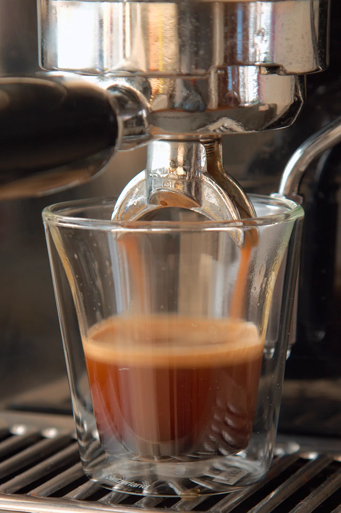
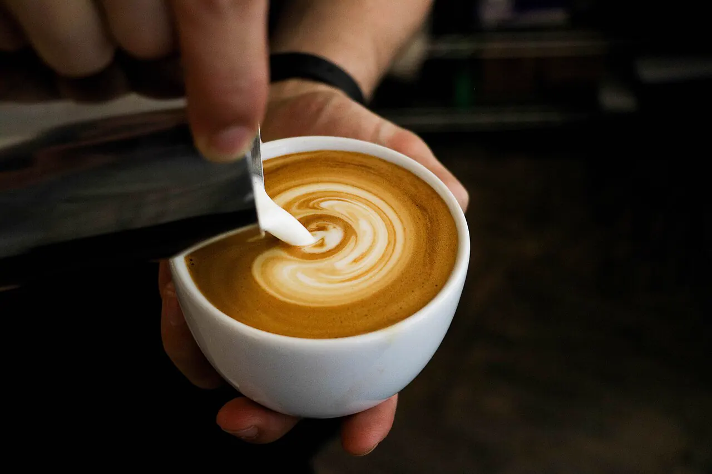

Открыто с 8:30 по будням
Кофейня «Поэзия кофе» в Твери
Эспрессо, фильтр и выпечка к утру. С 8:30 в будни, чтобы успеть до работы.
Адрес и часы работы
Тверь, центр. Заходите выпить на месте или возьмите с собой.
- Пн–Пт
- 8:30–18:30
- Сб–Вс
- 10:00–19:00
- Где
- Тверь, центр

Утро начинается с первой строки и первой чашки.
Название обязывает: тишина, хороший кофе и место, где можно дочитать главу.


Предзаказ без очереди
Утром каждая минута на счету — закажите заранее.
Напишите заказ
В WhatsApp: что и к какому времени.
Мы подтвердим
Ответим за пару минут и скажем, когда будет готово.
Заберите без очереди
Назовите имя на кассе — заказ уже ждёт.